Префектура Нара · Таварамото · гостиница
Ночь в соевой пивоварне: старейший в Наре дом «Маруто» снова варит соус и принимает гостей
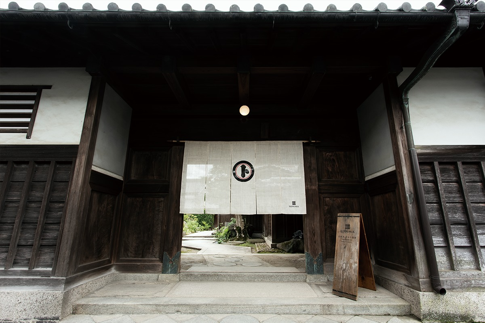
Соевую пивоварню «Маруто» основали в 1689 году, и это старейшая пивоварня префектуры Нара. Семьдесят лет она молчала, а потом наследник семьи заново научился варить соус по старым записям и открыл в её кладовых гостиницу.
История
Пивоварня, уснувшая на семьдесят лет
Пивоварню «Маруто» основали в 1689 году, и в префектуре Нара нет соевого производства старше. Когда-то её соус поставляли даже к императорскому двору. После Второй мировой войны в стране не хватало еды, сырьё для соуса стало почти невозможно достать, и около 1950 года пивоварня закрылась.
Огонь в ней снова зажёгся в 2011 году. Дело, которое когда-то пришлось оставить деду, взял на себя внук. Он разбирал старинные документы, сохранившиеся в кладовых, собирал воспоминания людей, которые здесь работали, и пять лет пробовал снова и снова. Наконец получилась моромИ, бродящая соевая масса, из которой отжимают соус. Впервые за семьдесят лет у пивоварни появился свой соус.
Следующим шагом стала гостиница. Хозяева хотели, чтобы вкус «Маруто» снова попробовало как можно больше людей, и решили превратить пивоварню в место, где можно остановиться на ночь. Глава дома в восемнадцатом поколении перестроил часть кладовых, которым 130–140 лет, и 29 августа 2020 года здесь открылась гостиница NIPPONIA Tawaramoto Maruto Shoyu. Старый облик пивоварни, где когда-то кипела работа, постарались сохранить.
Место
Таварамото и рисовые колосья
Пивоварня стоит в городке Таварамото, в самой середине древней провинции Ямато, которую считают колыбелью японской кухни. Здесь почитают богиню Михоцу-химэ: по преданию, она спустилась с неба на землю с рисовыми колосьями в руках.
Хозяева задумали гостиницу как «третье место», не город и не деревню, где из бактерий, проспавших в кладовых семьдесят лет, рождается новый урожай. Иероглиф «урожай» здесь читают как «минори», и одноимённое слово стало названием одного из номеров.
Дом
Номера в старых кладовых
Вся усадьба выстроена в стиле ямато-мунэ, традиционном для Нары, и сохранилась почти нетронутой: сегодня такие дома встречаются редко. Мебель и отделку номеров придумали, глядя на то, как работали помещения пивоварни. Названия комнат тоже связаны с варкой соуса и историей кладовых.
«Кифудзи»: люкс в главном доме
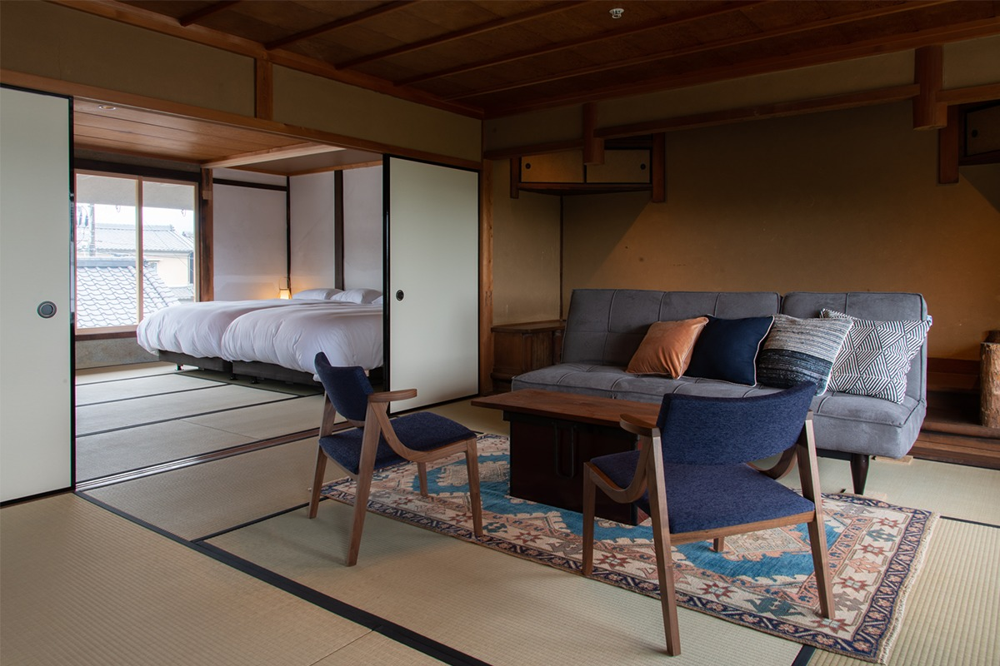
Люкс занимает второй этаж главного дома, где из поколения в поколение жили главы семьи Кимура. Из окон открывается типичный для Нары пейзаж, и смену времён года здесь видно особенно хорошо. Из спальни видна красивая черепичная крыша южного корпуса.
«Фуко»: комната в архиве
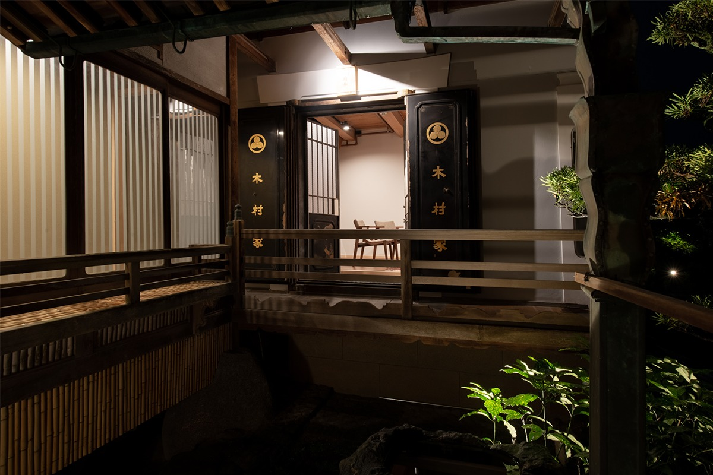
Словом «фуко» называли хранилище документов и ценностей. В этой кладовой лежали старые записи пивоварни и другие бумаги, которые семья Кимура передавала из поколения в поколение. Комнату перестроили для удобной жизни, но характер старой кладовой в ней остался. На полках стоят книги о пивоварении и истории Таварамото, и с ними приятно провести спокойный вечер.
«Усу»: ступа для пшеницы
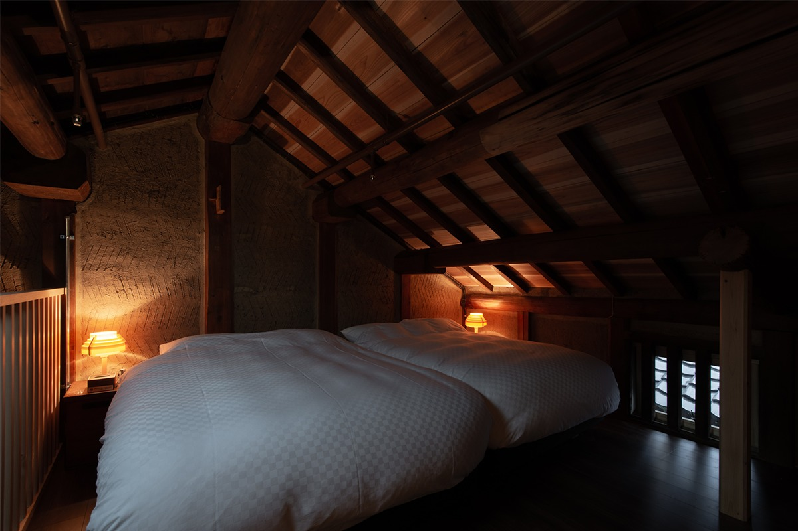
Четыре номера южного корпуса («Усу», «Кодзи», «Минори» и «Хасэ») устроены там, где соус варили и откуда его развозили, и у каждого своя тема. «Усу» это ступа, в которой ногами или силой воды мололи пшеницу: без неё соус не сваришь. Из спальни на втором этаже видно красивое деревянное перекрытие кладовой. Работу старых плотников здесь сохранили, а пространство сделали удобным для жизни.
«Кодзи»: комната, где снова родился соус
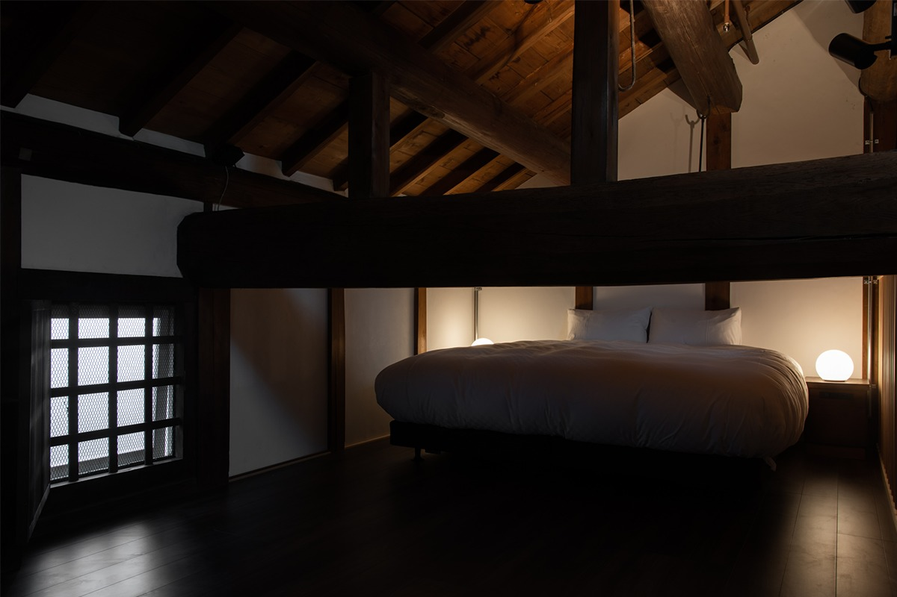
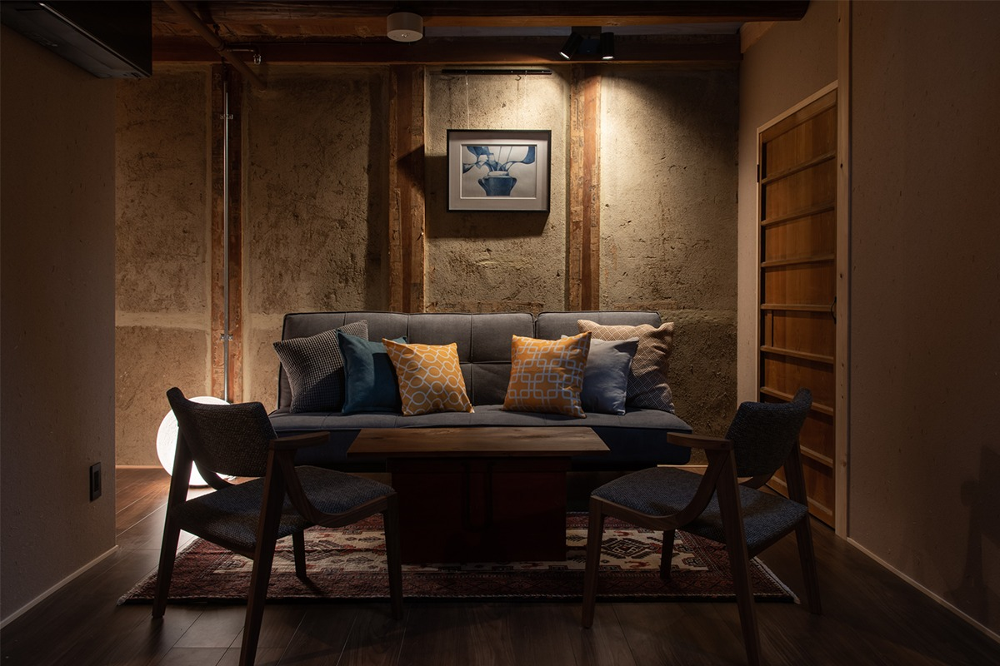
Название взято от кодзи, плесневого грибка, без которого не бывает ни соуса, ни сакэ. Иероглиф для этого слова придумали в самой Японии: он соединяет знаки «рис» и «цветок», будто грибок на зерне распускается цветами.
Последние годы именно здесь нынешний глава дома возрождал соус после семидесятилетнего перерыва. Поэтому присутствие соуса в «Кодзи» чувствуется сильнее, чем где-либо в доме. Номер просторный, и в нём лучше всего понятно, что значит ночевать в пивоварне.
«Минори»: под балками
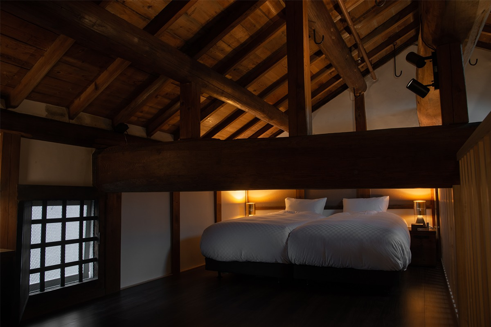
В южном корпусе на первом этаже раньше хранили сырьё, а на втором ночевали мастера-пивовары. Название «Минори» означает урожай: соус «Маруто» всегда держался на зерне с плодородных земель у реки Ямато. Массивные балки крыши нависают прямо над кроватями, и засыпать можно, разглядывая работу старых плотников.
«Хасэ»: окно на старую дорогу
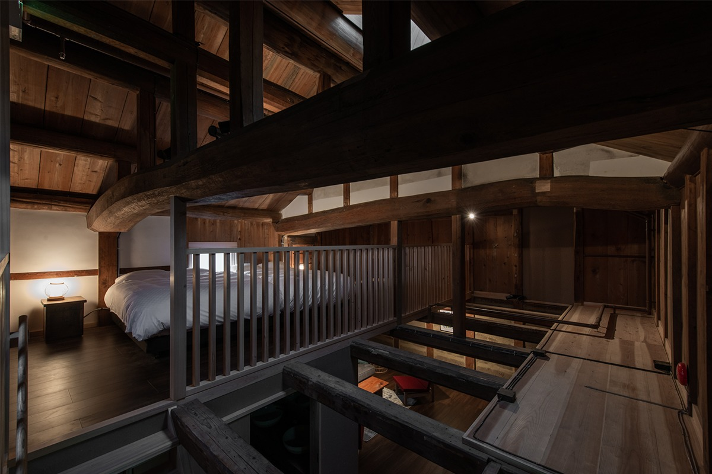
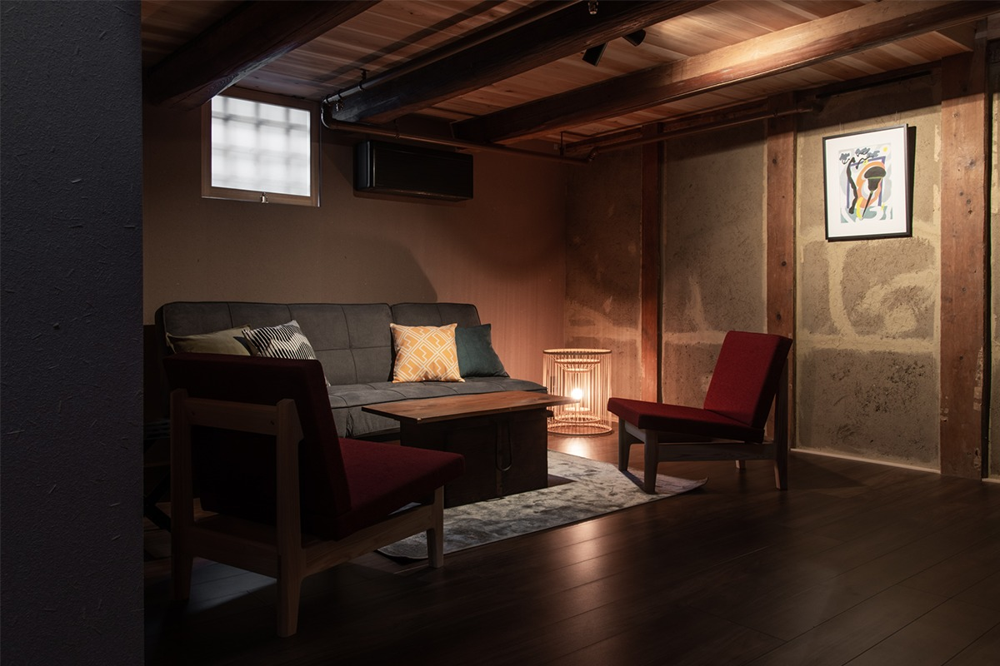
Рядом с этим номером проходит старая дорога Хасэ-кайдо. Когда-то по реке Хасэ, верхнему течению Ямато, на лодках сплавляли соус, сакэ и другие товары. Хозяева советуют посмотреть на эти места из окна второго этажа и представить, как здесь жили раньше.
«Курабито»: комната пивоваров
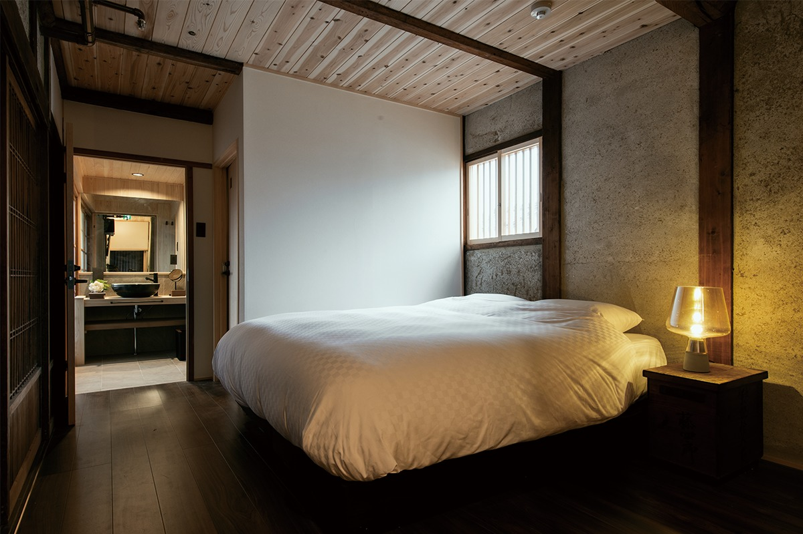
С самого основания на пивоварне работали люди со всей равнины Нара, и именно они сохранили дело «Маруто». Окно этой комнаты выходит во внутренний двор: через него когда-то наблюдали за работой, и эта рама считается одним из символов усадьбы. Здесь жили курабито, работники пивоварни, которые с утра до ночи были заняты варкой.
Стол
Ужин с возрождённым соусом
К открытию гостиницы появилось и меню. Блюда готовят с соусом, который сварили по старинным записям, впервые за семьдесят лет и из местного сырья.
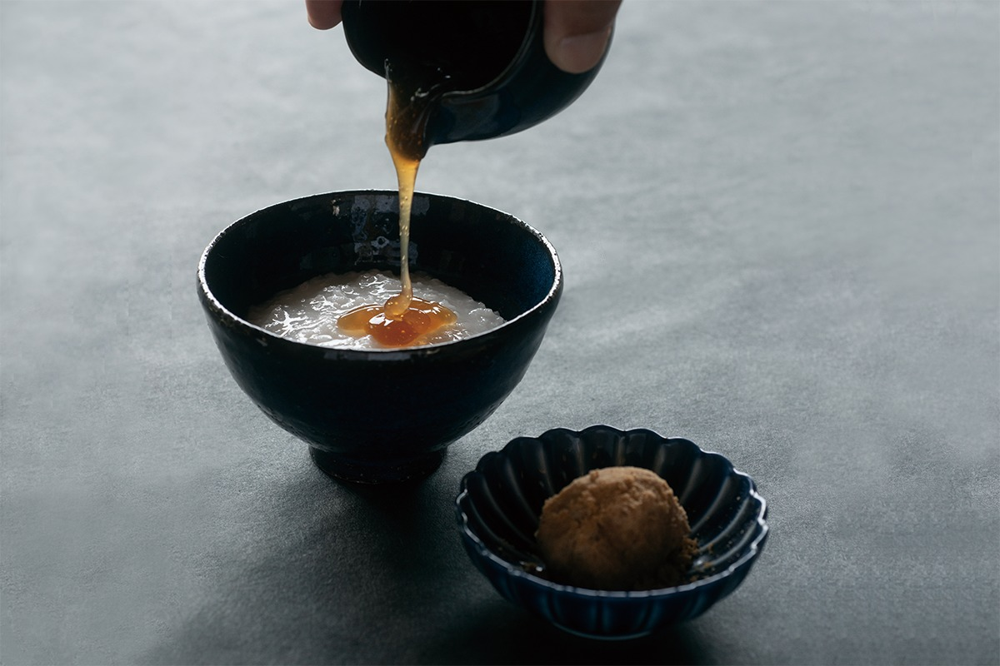
Окрестности
Святилища и древние поселения
Вокруг Таварамото много памятников, охраняемых государством. Среди них святилище Мурая, филиал святилища Омива, которое считают одним из древнейших в Японии, и следы поселений периода Яёй. Хозяева советуют погулять между полями и садами и никуда не торопиться.
Гостям дарят карту окрестностей и книжечку для печатей госюин. Её сделали в память о старом обычае паломников обходить два святилища, Омива и Мурая.
В 2026 году гостиница перешла в сеть UHN и с тех пор называется UHN Nara Maruto Shoyu.
UHN Nara Maruto Shoyu (бывшая NIPPONIA Tawaramoto Maruto Shoyu)
- Адрес
- префектура Нара, уезд Сики, Таварамото, Иёдо, 170
- Номера
- 7 номеров от 40 до 66 м²; во всех ванна из кипариса хиноки, тропический душ и тёплый пол, бесплатный Wi-Fi